프로세스 마이닝 개요
프로세스 마이닝
process mining is the techniques of extracting knowledge from event logs (프로세스마이닝은 이벤트로그들로 부터 데이터를 추출하는 기술이다.)
이벤트로그 - 사용자 이력을 파악하기 위해 로그 데이터를 남김
- these techniques provide new means to discover,monitor,and improve processes in a variety of application domains.
it’s BPM(business process management), but upside-down.
process mining -> bottom-up fashion
you don’t need to have a model of your process to analyze it.
with process mining, you get a process model from these data.
business intelligence vs. process mining
- business intelligence(BI) : tools and methods that use data to support decision making.
- process intelligence : business intelligence focusing on business process management(BPM)
- process mining : techniques,tools,and methods to discover,monitor and improve real processes
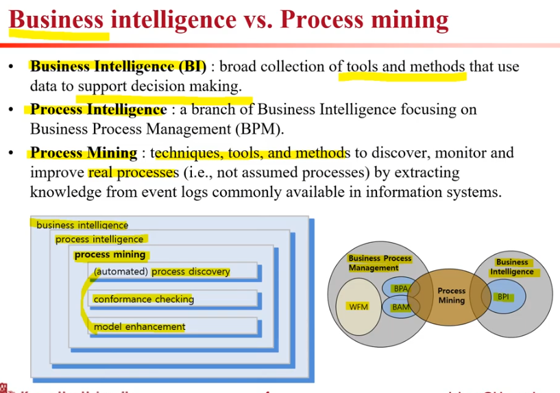
event logs for process mining
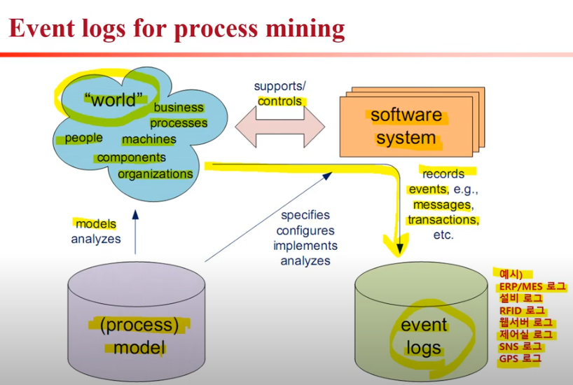
three main types of process mining: discovery, conformance,and enhancement
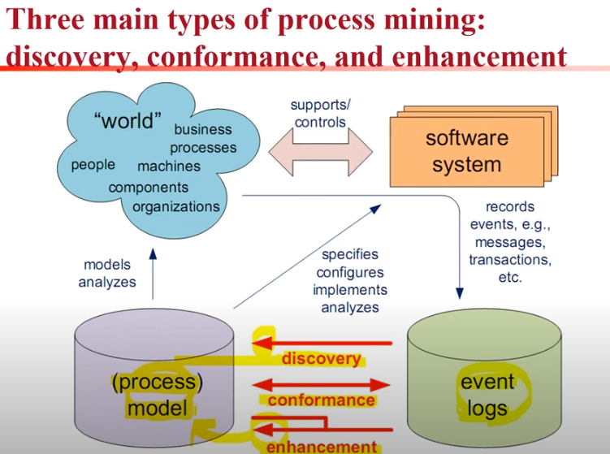
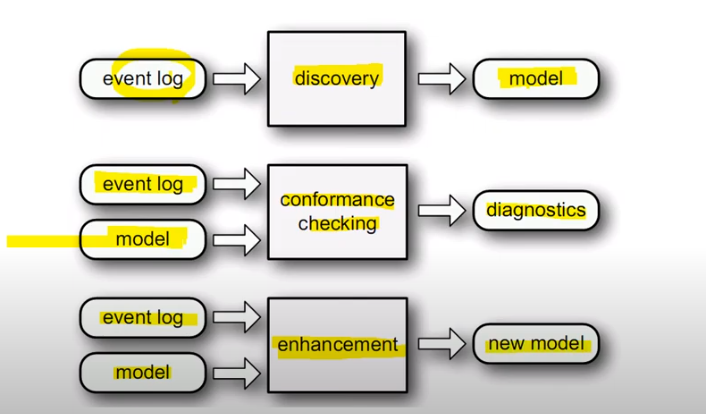
benefits of process mining
- Manually creating a process description (mapping) is:
- time consuming
- biased
- incomplete
- inaccurate
- automated process discovery eliminates these issues.
- it takes a consultant a few months and many meetings and interviews just to model a process
data collection
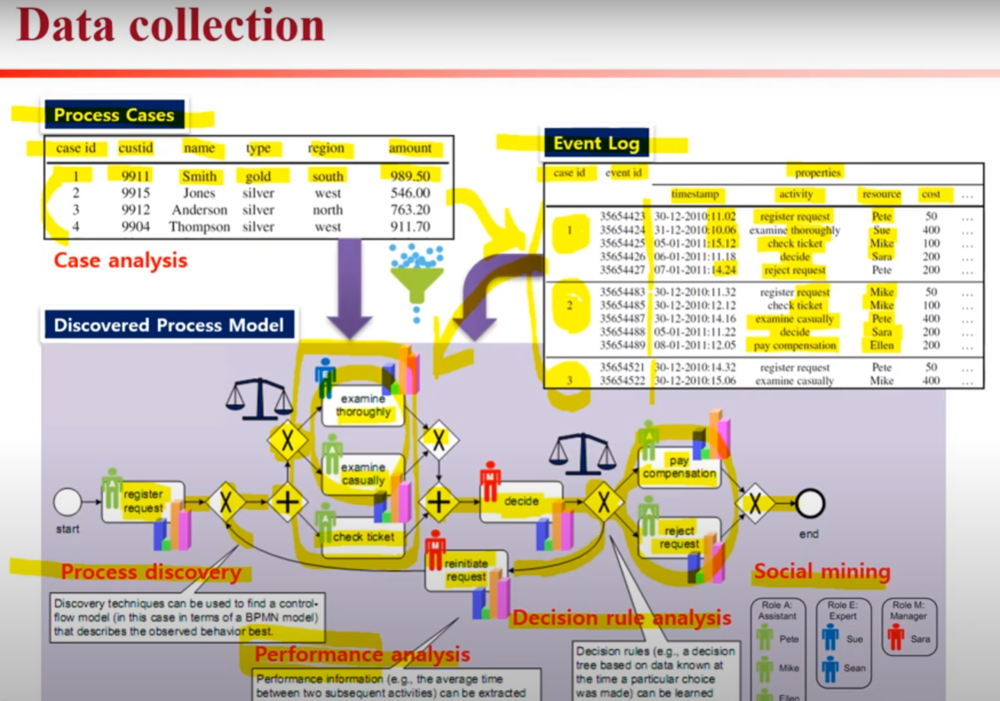
process discovery
- 밑에 모델은 petri-net으로 그려짐
- petri-net은
- 비동기성과 동기성의 성격을 가진 시스템을 잘 표현하는 모델링 도구
- 플레이스와 트랜지션으로 구성된 그래프
- 시스템의 상태,행위 등을 플레이스로 나타내고, 상태,행위의 변화를 야기하는 사건을 트랜지션으로 나타낸다
- 플레이스를 원으로, 트랜지션을 상자로, 아크를 화살표가 있는 선으로, 토큰을 작은 원으로 표현한다.
- 네트의 변화를 결정하여 시스템의 변화를 파악할 수 있는 장점을 제공한다
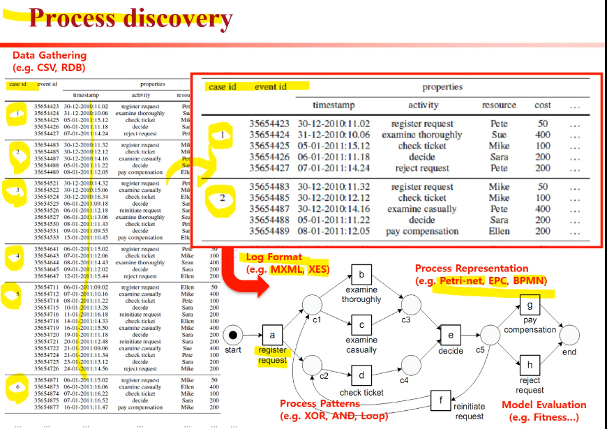
ProM 5.2: process discovery
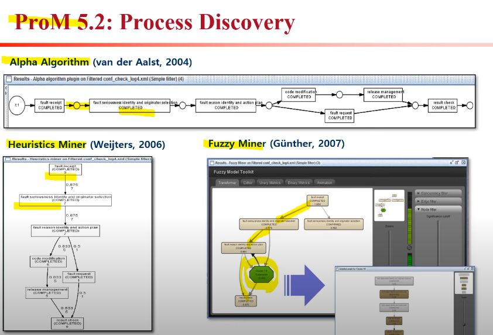
evaluating the discovered process
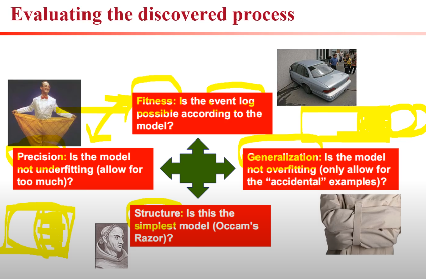
Conformance Checking
- event log와 process model의 일치성을 검사
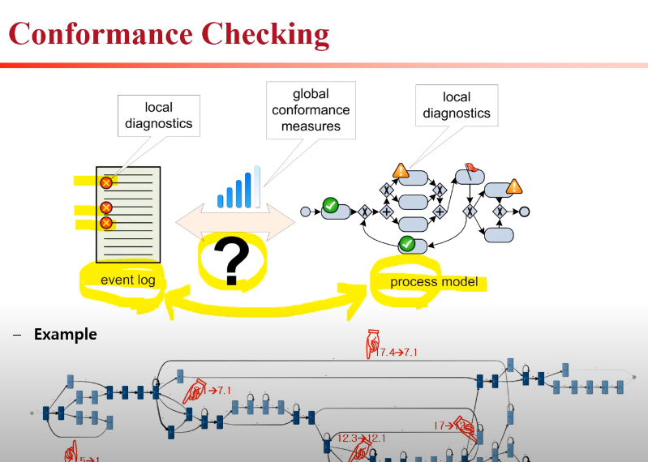
ProM 5.2 : Conformance checking
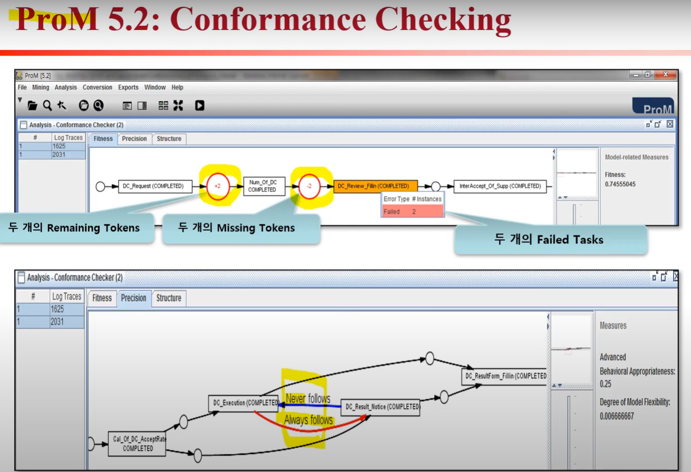
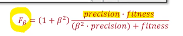
Enhancement
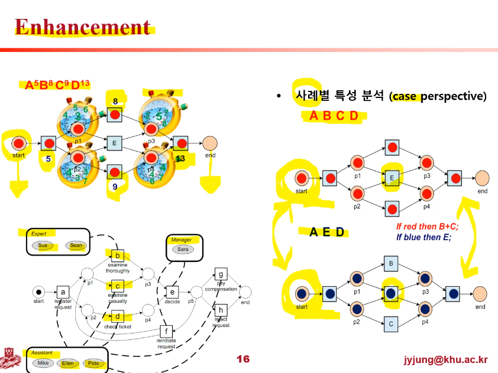
bringing it all together
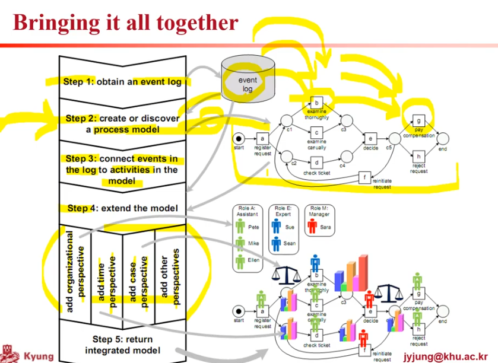
perspectives
- control-flow perspective focuses on the control-flow,the ordering of activities.
- organizational perspective focuses on information about resources hidden in the log
- time perspective is concerned with the timing and frequency of events.
- case perspective focuses on properties of cases, cases can also be characterized by the values of the corresponding data elements.